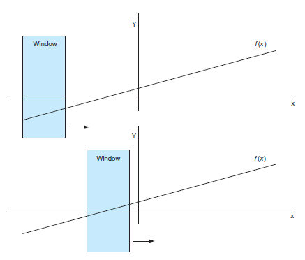
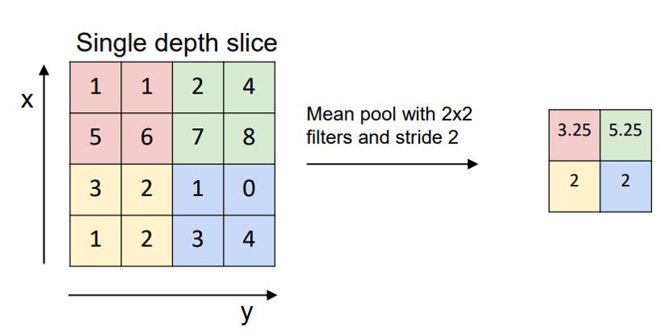

7.1 Introduction to CNNs
Filters, padding, stride, and pooling.
These notes walk through the lecture slides. The original deck is unchanged; use (slides) on the course hub if you want that PDF.
1. Why a convolution for language
Dense nets and the Week 4 bags treat a document as one vector. They do not slide over local structure. Language has two kinds of local structure you care about:
- Order. The dog chased the cat is not The cat chased the dog.
- Proximity. In The ship's hull, despite years at sea, … shone like new, shone belongs with hull, not with the nearest noun.
Those relations are spatial (who sits next to whom) and temporal (what came earlier). A convolutional net looks through a small window that moves across the input. It was built for images. It works for text once the “pixels” are embeddings (note 7.2).
Sources: Practical Natural Language Processing, Géron’s Hands-On Machine Learning, and Voita’s NLP course notes. The sliding-filter GIFs follow Dumoulin’s conv arithmetic.
2. What a CNN is doing
A filter is a small stack of weights plus an activation (usually ReLU). You place it on a patch, take a dot product, apply ReLU, step, repeat. The output is a feature map: where that pattern fired.

On an image the patch is (3 \times 3) pixels. On text the patch is (n) tokens (note 7.2). The idea is the same: weight sharing. The same filter looks at every position, so a pattern can fire anywhere.
CNNs are the default for image classification, faces, and detection. The rest of this week is the same blocks pointed at sentences.
3. The blocks
| Block | Job |
|---|---|
| Convolution | Scan for a local pattern |
| Activation | Keep positive evidence (ReLU) |
| Pooling | Downsample; keep the strong fire |
| Dense head | Turn the maps into class scores |
A filter is a set of weights, not one number. On images, (3 \times 3) is common; other sizes exist. Each filter is unique. Inside one snapshot the weights are fixed. (z_0 = \max(\sum_i x_i w_i, 0)) is the ReLU picture from lecture.
Stride is how far the window jumps. Stride 1 is the default. It overlaps neighboring patches so a token (or pixel) is seen with its neighbors. A stride as large as the window loses that blur on purpose.
Padding. A (3 \times 3) filter that must stay inside a grid produces a smaller map (the right edge never sees a centered filter). padding='valid' accepts the shrink. That under-samples the edges. On a 12-megapixel photo you may not care. On a 10-word tweet, the first word is a large fraction of the signal. Pad (zeros, or a chosen scheme) so the first real token is treated like a middle one. Padding invents data; that is the tradeoff.
4. Pooling and the head
Pooling (max or average) shrinks each map and keeps the strongest response. You lose precise position and gain a smaller tensor and some shift invariance: not good can fire in two different places and still reach the same pooled feature.

Then you flatten (or globally pool) and feed a fully connected layer. Loss on the label backpropagates through the dense layer and through every filter. The filters are learned, not drawn by hand.
You can stack several conv–pool stages. Each stage sees a larger effective neighborhood. The last stage still ends in a vector you classify.
5. What to carry into 7.2
- Convolution = shared filter, sliding window.
- Stride and padding are the two knobs that change map size and how edges are treated.
- Pooling compresses; the dense layer decides the class.
- Text will use a 1-D window over tokens, not a 2-D window over a page. Note 7.2 is that translation.
Parameter count. A dense layer on a flattened 28 (\times) 28 image has a weight for every pixel-to-neuron pair. A (3 \times 3) convolution has nine weights per input channel, reused everywhere. That is why CNNs could train on images before we had today’s GPUs, and why a text CNN can look at every trigram without a column per trigram string.
6. A picture you should be able to redraw
Input grid → several filters (each a sliding dot-product + ReLU) → one map per filter → pooling → flatten → dense → class. Loss at the end updates every filter. If you can mark stride and padding on that sketch, you are ready for the 1-D version.
The GIF in the original slides is the same story: one filter, many overlapping placements, one output map.
7. Practice
-
Why does stride 1 usually beat a no-overlap stride for detecting not good?
-
You set
padding='valid'on tweets of length 8 with a kernel of 5. Which tokens are under-sampled, and why might that matter for sentiment? -
Max pooling throws away exact position. Name one classification job where that is acceptable and one where it might hurt.